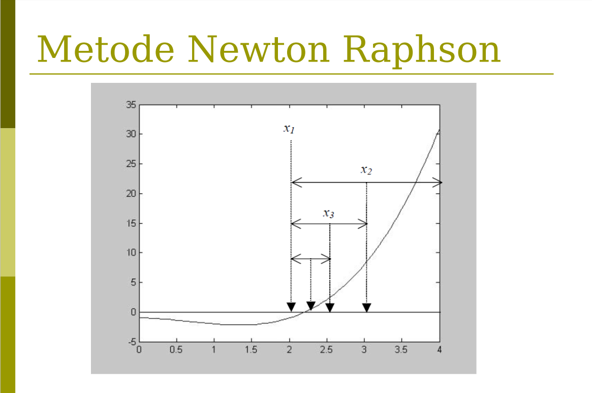

Kesimpulan Persamaan non-linier dapat diartikan sebagai persamaan yang tidak mengandung syarat seperti persamaan linier,
sehingga persamaan non-linier dapat merupakan:
1. Persamaan yang memiliki pangkat selain satu:
$$x^{2}$$
2. Persamaan yang mempunyai produk dua variabel:
$$xy$$
Dalam penyelesaian persamaan non-linier diperlukan akar-akar persamaan non-linier, dimana akar sebuah persamaan non-linier
f(x)=0 merupakan nilai x yang menyebabkan nilai f(x) sama dengan nol.
Dalam hal ini dapat disimpulkan bahwa akar-akar penyelesaian persamaan non-linier merupakan titik potong antara kurva
f(x) dengan sumbu x.
persamaan non-linier mempunyai banyak metode seperti:
Metode Terbuka
Metode Iterasi Titik Tetap
Metode Newton-Rapshon
Metode Secant
Metode Terbuka
Metode Biseksi
Metode Regula Falsi
dan lain sebagainya ...
Teori Metode Newton-Raphson
Metode Newton-Raphson merupakan metode penyelesaian persamaan non-linier dengan menggunakan pendekatan satu titik awal dan mendekatinya dengan memperhatikan slope atau gradien. titik pendekatan dinyatakan pada Persamaan.
$$x_n+1=x_n - \frac{f(x_n)}{f^{1}(x_n)}$$
Untuk dapat menggunakan metode Newton-Raphson, terlebih dahulu kita perlu memperoleh turunan pertama dari persamaan tersebut.
$$f(x)=x - e^{-x}\rightarrow f^{1}(x)=1+e^{-x}$$
Tebakan awal yang digunakan adalah x=0
$$f(x0)=0-e^{-0}=-1$$ $$f^1(x0)=1-e^{-0} =2$$
Hitung nilai x baru: $$x1=x0-\frac{f(x0)}{x^1(x0)}=0-\frac{-1}{2}=0,5$$ Berdasarkan hasil iterasi diperoleh akar penyelesaian persamaan non-linier adalah: $$x=0,5671433$$ dengan jumlah iterasi yang diperlukan adalah 5 iterasi.
Teori Metode Newton-Raphson
Metode biseksi merupakan salah satu metode tertutup untuk mentukan solusi akar dari persamaan non linear. Ide awal dari metode biseksi adalah metode tabel dimana areanya dibagi menjadi N bagian. Sementara dalam motode biseksi membagi range menjadi 2 (dua) bagian saja. Akar-akar persamaan nonlinear dicari melalui proses iterasi, dengan prinsip utama sebagai berikut: memilih bagain yang mengandung akar dan membuang yang tidak mengandung akar hingga diperoleh akar persamaan.
Hal yang terlebih dahulu harus ditentukan dalam metode biseksi adalah menentukan batas bawah (a) dan batas atas (b). Kemudian dicari nilai tengah : x=(a+b)/2. Secara matematis, akan terdapat akar persamaan bila f(a) dan f(b) dalam suatu range berlawanan tanda atau f(a) x (f(b) < 0.
Algorima Metode Biseksi
1.Definisikan fungsi f(x) yang akan dicari akarnya
2.Tentukan nilai a dan b
3.Tentukan torelansi e dan iterasi maksimum N
4.Hitung f(a) dan f(b)
5.Jika f(a).f(b)>0 maka proses dihentikan karena tidak ada akar, bila tidak dilanjutkan
6.Hitung x=(a+b)/2
7.Hitung f(x)